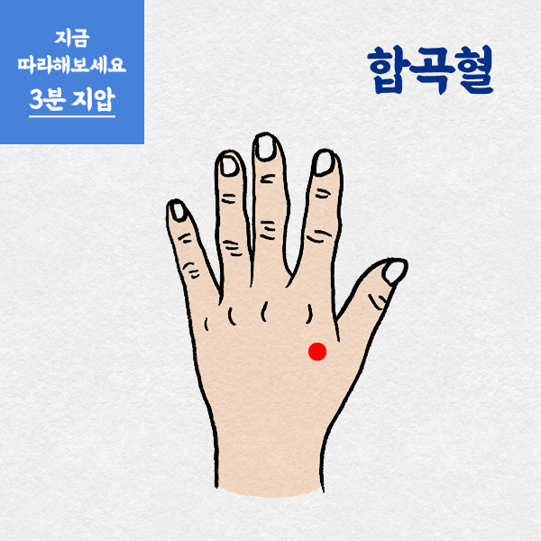

속에 좋은 지압

위장관의 적체를 내려주는 합곡혈
합곡혈은 엄지와 검지가 갈라진 뼈 사이 움푹 팬 부분에 있는 혈자리입니다.
위장관의 적체를 내려주는 합곡혈은 경락을 통하게 하는 성질이 있는데요.
따라서 두통, 고혈압, 이비인후과 질환, 치통, 생리불순 등 많은 곳에 응용할 수 있습니다.
합곡혈은 언제 어디서나 쉽게 지압할 수 있는 부위인 만큼, 잊지 말고 지압해 주세요!
기혈순환을 터주는 태충혈
손의 엄지와 검지 사이에 합곡혈이 있다면 발의 엄지, 검지 사이에는 태충혈이 있습니다.
태충혈은 전신의 기혈과 경락을 소통시키는 효과가 있습니다. 소화불량에도 활용할 수 있고 두통과 어지럼증, 고혈압 등에도 사용되는 혈자리죠.
양손의 합곡혈과 양발의 태충혈을 함께 '사관혈'이라고 부릅니다.
혈자리 네 곳을 통해 사관혈을 지압할 때는 약간 ‘아프다’는 느낌이 들 정도로 꾹꾹 눌러주시면 효과를 볼 수 있습니다.